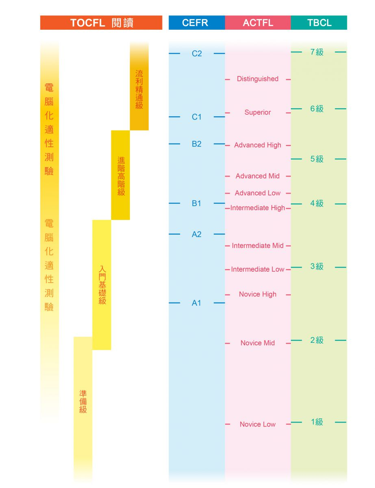

認識臺灣華語文能力基準（TBCL）：
基本概念與教材設計應用
從零基礎出發，先用 3 分鐘看懂臺灣國家級華語能力標準（TBCL）是什麼、如何分級與拆解，再深入探討華語教材設計的四大運用難題、五國教科書實證比較與國教院 14 套數位工具解法。

什麼是 TBCL？3 分鐘搞懂臺灣華語能力標準
給第一次接觸華語教學的新手：TBCL 就像「華語世界的共同語言尺標」，讓教、學、編教材、考試有統一依據
- 誰研發的？由教育部自 2013 年起補助國家教育研究院，歷經逾百場學者專家會議，結合臺灣華語文語料庫（COCT）大數據所建置（參酌歐洲漢語基準 EBCL、美國 ACTFL 與歐盟 CEFR）。
- 解決什麼痛點？過去外國人學華語時，各國課本難度不一、難以比較程度；TBCL 把「從零起點到專業流利」切成明確階梯，2023 年更擴充為臺灣第一本官方《應用參考指引》。
- 為什麼不能隨便塞生詞？語料庫研究顯示（白明弘 2022），閱讀文章須熟悉 95%–98% 詞語（詞彙覆蓋率）才不會挫折；依齊夫定律，先學高頻詞效率最高，TBCL 正是把大數據詞頻轉化為循序漸進的教學詞表。
👩🏫 華語教師
客觀掌握學生程度（Can-Do）、設定具體課堂目標、設計課綱教案，並用線上工具快速備課。
🧑🎓 華語學習者
看懂自己目前在哪一級、評估學習進度、利用免費語料庫自主學習與準備 TOCFL 測驗。
🏫 學校／機構行政人員
清楚標明各班級分級與課程目標，協助轉學生或新生精準分班、銜接新課程。
📚 教材編輯者
確認課文詞彙難度、查詢搭配詞與話題，避免課本前鬆後緊或超綱失控。
一張圖看懂「三等七級」與能力指標六成分拆解
先建立「從基礎到精熟」的直覺畫面，再學會官方 2024 手冊教的「指標拆解公式」，立刻讀懂任何一條指標
日常求生與簡單對話
語言單位：簡單字詞 → 短語短句 → 簡單完整句。
能做什麼：聽懂數字價錢、自我介紹、看懂路牌菜單、寫簡短留言；第 3 級起加入翻譯。
流暢討論與表達觀點
語言單位：連貫句群 → 流暢段落與有組織篇章。
能做什麼：聽懂電視新聞與演說、陳述贊成反對理由、摘要評論文章；涵蓋全部 496 語法點。
專業領域與言外之意
語言單位：書面語長篇 → 精準運用熟語與專業論述。
能做什麼：聽懂快語速、不同腔調、幽默與反諷；撰寫論文報告並依社會地位調整語氣。
L-4-2「能聽懂並掌握以較長段落陳述的說明、指示及熟悉主題演說的重點。」
行為
聽懂、掌握
語言
較長段落
話題
熟悉主題
文本
說明／指示／演說
- 長期 vs. 短期目標分離（p.9–10）：學校用「6 大課程目標」規劃數年藍圖；一線教師與編者則拆解「學習表現＋學習內容」成為單課可操作目標。
- 溝通表現重於知識背誦：TBCL 涵蓋聽（28）、說（33）、讀（23）、寫（20）、譯（15）與三等文化，評量與教材皆強調表現重於語言知識（p.38、43）。
官方教材編選藍圖：取材三面向 × 編寫六原則
進入教材設計核心：官方為教科書出版者與自編教師確立的取材維度、編纂原則與 10% 彈性空間
- 1. 語言（結構與彈性）：依各級漢字、詞語、類詞綴、語法點選材；各冊單課生詞與語法點數量不宜差距過大；實際應用時各等級保有 10% 彈性（2024 手冊 p.24）。
- 2. 功能（分等遞進）：
• 基礎（1–3 級）：問候、感謝、道歉、詢問、介紹。
• 進階（4–5 級）：邏輯銜接（附加、對比）、互動（引發好奇、建立關係）。
• 精熟（6–7 級）：調解、談判、評估等高難度功能。 - 3. 文化（生活與反思）：融入生活方式、深層溝通規則與價值觀，不宜僅止於節慶民俗，並引導跨文化比較。
以學習者為中心
真實、實用、有趣，具明確適用對象與課堂類型。
使用正體字編輯教材
結構嚴謹、為華人文化資產，亦利於辨識閱讀記憶。
善用科技發展多元模式
結合回饋、檢索、互動與線上整合系統／AI 平臺。
溝通能力優於語言知識
融合主題、句型、功能與跨文化情境，設計真實任務。
學習內容循序漸進
高頻義項與核心句型優先、後續反覆復現（急用先學例外）。
選材採溝通式教學原則
任務或內容導向，語句真實符合華語慣例，長度不宜過長。
運用問題一：字詞語法「量級跳躍」與坡度設計難題
跨等第交界處詞量與語法點呈數倍跳升，若未妥善分流，教材極易出現「前鬆後爆」
| 級別 | 漢字 | 詞語新增與相對規模 | 類詞綴 | 語法點 | * 切分 |
|---|---|---|---|---|---|
| 1 級 | 246 | 396 | 6 | 15 | 1 / 1* |
| 2 級 | 258 | 402 | 7 | 92 ▲ | 2 / 2* |
| 3 級 | 297 | 456 | 12 | 134 ▲ | 3 / 3* |
| 4 級 | 499 ▲ | 1,415 | 15 | 149 ▲ | 4 / 4* |
| 5 級 | 600 | 2,619 | 29 ▲ | 106 | 無 |
| 6 級 | 600 | 4,144 | 4 | 無 | 無 |
| 7 級 | 600 | 4,993 | 無 | 無 | 無 |
- 1→2 級語法暴增 6 倍（15→92）：等分課次極易句型過載。
- 3→4 級詞量翻三倍（456→1,415）：5–7 級更達每級 2,600–5,000 詞，單本課本無法全收。
- 6–7 級無獨立語法點表：高階須轉向語篇銜接、書面語與熟語。
- 善用 1–4 級 `*` 級切分：將一般與 `*` 級切為上／下冊或核心／補充層。
- 高頻義項先出＋類詞綴擴詞：如「花 1（1* 級名詞）→ 花 2（3 級動詞）」；類詞綴詞表僅收 1 代表詞（如「書店」），搭配 73 類詞綴擴詞（`～店`、`～場`）。
- 主教材＋分級讀物雙軌：以 95–98% 詞彙覆蓋率概念控制閱讀負荷。
跨國實證：五國主流華語教科書 vs. TBCL 比較分析
用真實數據驗證教材設計痛點：歐美、中、韓、日、泰 5 套海外常用教材與 TBCL 比對後發現了什麼？
| 地區 | 分析教科書（冊數） | 總詞數 | TBCL 涵納率 | 各冊詞彙中位數（盒鬚圖） | 語法交集（基礎級佔比） | 主要坡度診斷 |
|---|---|---|---|---|---|---|
| 歐美 | Integrated Chinese（1–4 冊） | 1,553 | 約 80% | 1 / 2 / 4 / 4 級 | 156（86%） | 第 3、4 冊重疊；總詞偏少 |
| 中／歐美 | 新實用漢語課本二版（1–4 冊） | 2,693 | 約 80% | 1 / 3 / 4 / 4 級 | 187（75%） | 第 1–2 冊跨距大；3–4 冊重疊 |
| 韓國 | Darakwon Chinese Master（1–4 冊） | 1,430 | 約 80% | 1 / 3 / 4 / 4 級 | 117（72%） | 第 2 冊橫跨 4 級，學習不易 |
| 日本 | 中文入門新版（全 1 冊分二部） | 604 | 約 70% | 初級 2 / 中應用 4 級 | 148（88%） | 單冊跨 5 級，詞量差 TBCL 1 倍 |
| 泰國 | 初級漢語 1–2 ＋ 中級漢語 1–2 | 3,553 | 約 70% | 1 / 3 / 4 / 5 級 | 221（55%） | 四冊坡度最分明（達 TBCL 5 級） |
- 「看似超綱」多屬不符合收詞原則：如城市名、人名、詞彙化不顯著之「好幾、不可」、類詞綴衍生詞（「音樂會」收於類詞綴表）、選字差異（「室友／同屋」）。
- 真正未收錄詞幾乎全在 10% 彈性內：扣除不符原則詞後，五套教材各冊未收錄詞皆低於 10%（僅韓國第 4 冊為 11.5%），證實 TBCL 具高度國際涵蓋力。
- 盒鬚圖體檢不可少：全球主流教材普遍有「單冊跨 3–5 級、相鄰冊重疊」通病；臺灣《時代華語》已提供 TBCL 對照，《來！學華語》則直接依 TBCL 編寫。
- 評鑑詞表切忌粗暴字面比對：須先做詞形前置處理，並合併查閱 73 個類詞綴表，否則會高估超綱率。
運用問題二：情境主題、三維文化螺旋與「急用先學」
如何把 1–5 級 5,288 詞與深層交際文化融入真實課本，避免寫出僵硬的「假對話」
（臺灣主流課本單元編排背景示意）
- 急用先學 vs. 嚴格控級：2023 指引 p.38 明訂「急用先學屬循序漸進例外」，2024 手冊亦提供 10% 彈性；宜另標「情境補充詞」而非犧牲課文自然度。
- 科技次主題僅 32 詞：數位時代高頻用語偏少，編者須主動補充時代性詞彙。
- 文化融入任務本身：參考「撰寫家書」單元，以文化產物作為任務主體，而非課末附錄短文。
運用問題三：大綱選用、四層鷹架與多技能／語法銜接
跳脫單一語法本位，整合 2024 手冊四層實作結構，並化解打字寫作、3 級翻譯與語法對照三大盲點
① 課程大綱（終點）
整季／學期規劃（例：7 週華裔夏令營 7 主題）。
② 單元大綱（中途站）
將單一主題拆成任務、聽說讀寫與三維文化。
③ 教學大綱（教案）
設定步驟、時間與評量（目標設為現有程度＋1 級）。
④ 教材（學習鷹架）
輔助學生完成任務與關注語言點之文本與學習單。
- 1. 寫作＝手寫＋鍵盤打字（p.21）：基礎 1–3 級累計 801 漢字，應區分「核心摹寫／手寫」與「鍵盤打字書面產出」，降低初學挫敗。
- 2. 翻譯自第 3 級起納入（p.11、22）：1–2 級不設翻譯指標；第 3 級起再循序由「字詞短句 → 完整句 → 句群 → 段落 → 篇章」展開。
- 3. 聽力音檔語速與口音斷層（p.13–14、39）：1–3 級須「緩慢清晰」，4 級起應逐步加速、加入多元口音與真實不規範語音，避免全程播音腔。
- 4. 跨教材語法對照陷阱（何莉玉等 2023）：各書「語法範圍、術語（是字句 vs. 繫動詞）及詞彙／語法歸屬（恐怕、乾脆、到底列詞表）」不一，編者須逐句對齊例句涵義。
運用問題四：跨標準對照並非「一對一」靜態換算
官方附錄二顯示：聽、說、讀、寫四項技能對齊 TOCFL / CEFR / ACTFL 的刻度各有差異
- 盲點 1｜把四技能混成單一換算表：在 TBCL 第 2 級，聽力與閱讀仍低於 CEFR A1（Novice Mid），但口語已達 CEFR A1–A2（Intermediate Low）。
- 盲點 2｜忽略零起點前段的細分優勢：TBCL 1 級（及聽讀 2 級）細分於 CEFR A1 之下、對應 TOCFL 準備級，更貼合非漢字圈零起點起步。
- 盲點 3｜寫作與口語頂端對照特殊：寫作圖未列 TBCL 1 級（自 2 級起對應）；口語圖 6–7 級皆落於 ACTFL Superior 區間（未列 Distinguished）。

官方數位解法：14 套系統、「降級改寫」實例與 DDL
用數據驅動取代人工苦算：從自動分級、同義詞降級替換到中介語偏誤診斷（coct.naer.edu.tw）
基礎標準檢索
#1 漢字(`hanzi.jsp`)、#2 詞語(`word.jsp`)、#3 基礎詞彙(`corevoc.jsp`)、#4 類詞綴(`simaffix.jsp`)、#5 語法(`grammar.jsp`)，另提供 Excel 全文下載。
教材編輯輔助 ★
#7 教材編輯輔助(`edit.jsp`) 自動標級、畫圓餅圖、出 CSV 詞表與近義替換；#8 語義場關聯詞；#9 分詞系統。
詞表體檢分析
#6 國教院索引典(`bcoct`) 查書面／口語真實搭配詞；#10 語料庫覆蓋率統計(`coverage.jsp`)；#11 詞表比較工具(`compare.jsp`)。
偏誤預防與雙語
#12 華語中介語索引典查非母語偏誤；#13 華英雙語索引典(`bc.jsp`) 查上下文意譯；#14 作文錯字自動批改(`spcheck.jsp`)。
輸入「北極熊與採石油」真實文章後，系統內建 5 種語料庫（國語日報〔預設〕、遠流語料、中國時報、平衡語料庫、Chinese GigaWord）並可鎖定等級上限，自動推薦同義詞階梯，將超綱的「注重（5 級）」一鍵換成「重視（4 級）」：
- DDL 課堂應用：引導中高級學生透過語料庫觀察母語者真實搭配，對改善僵化／石化錯誤尤有效，但屬輔助工具（不取代教師講解，避免只做填空）。
- 主題關鍵性（Keyword-Keyness）：比對學習者語料 vs. 母語者語料，精準揪出特定母語背景的母語負遷移與過度／少用之語篇關聯詞。
落地檢核清單：導入 TBCL 的 5 步教學與教材框架
結合 2023 指引、2024 使用手冊實例與五國教科書實證，整理給新手教師與教材團隊的可操作流程
定級＋拆解六成分
依 2024 手冊以「現有程度＋1 級」設目標，用「行為＋語言＋話題＋文本」轉為具體短期學習目標。
搭複合大綱與三維文化
從 67 話題取材，採「任務＋話題＋功能」複合大綱，嵌入「觀念／實踐／產物」三維文化實踐。
控坡度並善用 10% 彈性
1–4 級以 `*` 級切分坡度、優先高頻義項與類詞綴；急用超綱詞控於 10% 彈性內另列補充區。
真實語料＋數位系統改寫
如 2024 手冊「美食評論家」教案：取真實茶館評論，以 edit.jsp 檢核降級改寫並用中介語典防偏誤。
多元評量與音檔分級
落實「表現重於知識」與 AoL/AfL/AaL；手寫／打字分流、隨級提升聽力語速與口音，並銜接 TOCFL。
TBCL 不是束縛教學的死板條文，而是讓華語教與學做到
「新手有階梯、教材有坡度、文化有深度、國際有對照」的實證基石。
本簡報整合之 5 篇 Wiki 原始來源（wiki/sources/）
- [官方] 國教院（2023.10）《華語文能力基準應用參考指引》（GPN 4711200088）
- [官方] 國教院（2024.07）《華語文能力基準應用參考指引使用手冊精華版》（GPN 4711300098）
- [研究] 何莉玉、林慶隆、白明弘、許鈞惟（2023.12）〈各國華語文教科書與 TBCL 詞語與語法點的比較分析〉，《華文世界》132 期
- [官方] 林慶隆〈華語文教學的課程指引——臺灣華語文能力基準〉，《國教院電子報》216 期
- [官方] 白明弘（2022.11）〈詞頻表在語言教學上的應用〉，《國教院電子報》225 期
三層權威分層與版本透明聲明
官方標準 vs. 研究 vs. 實務延伸：全簡報皆以徽章明確標示知識層級；並依 LLM Wiki 原則顯式保留跨版本微調（如 2023 版 14,425 詞 vs. 2024 版 14,420 詞；基礎詞彙 1,254 vs. 1,265）。
知識庫規模：共 25 個互連 Markdown 頁面（涵蓋 levels/、components/、concepts/、comparisons/、syntheses/、sources/）。